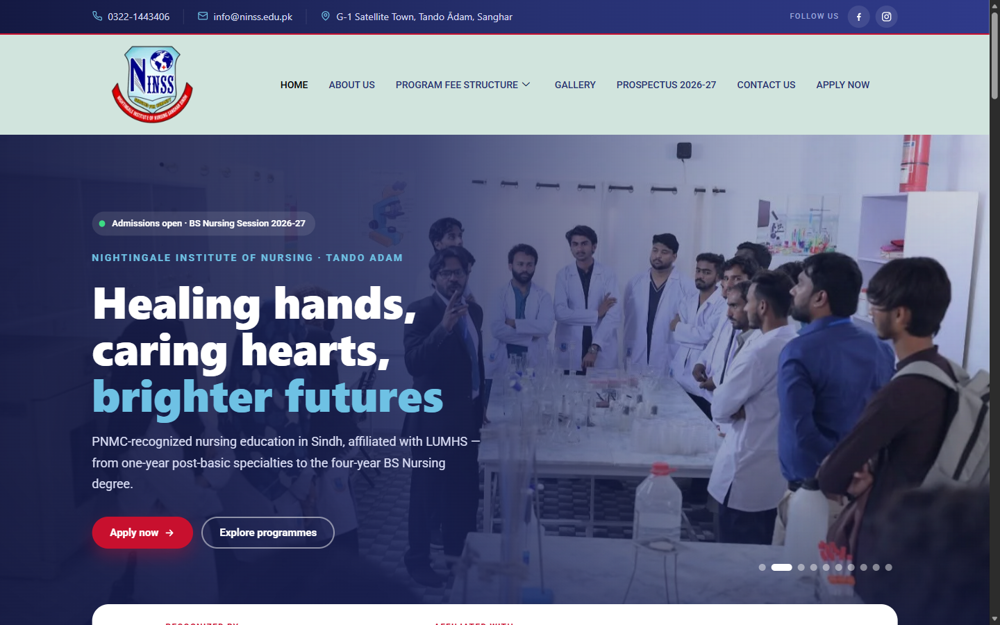
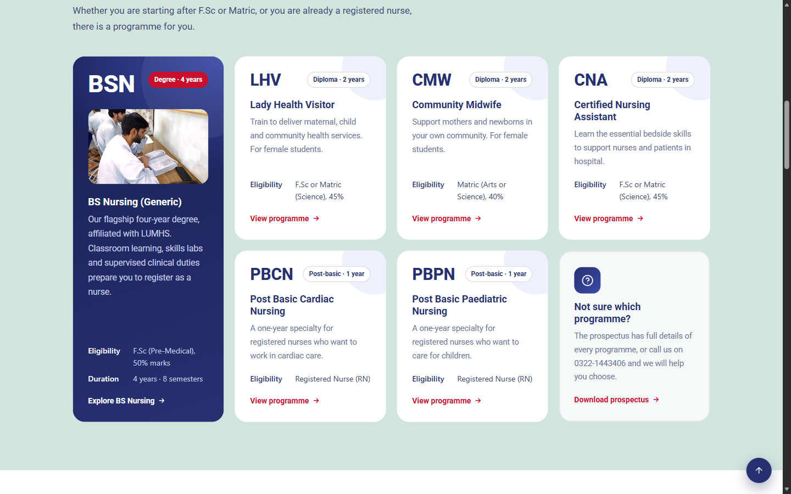
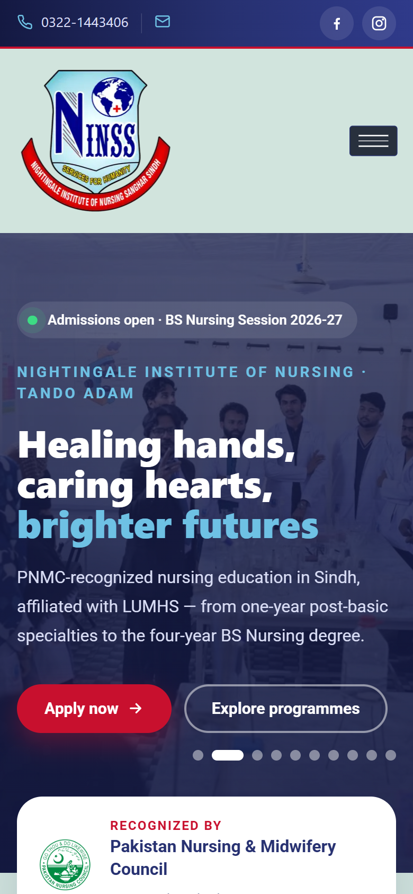

The Brief
NINSS needed a modern institutional website that communicates trust to students and parents, explains every programme clearly, and turns admissions interest into applications, especially during the BS Nursing intake season.
A custom-built website for the Nightingale Institute of Nursing, Tando Adam, designed to showcase its nursing programmes, highlight its accreditation, and guide prospective students toward admission.
NINSS needed a modern institutional website that communicates trust to students and parents, explains every programme clearly, and turns admissions interest into applications, especially during the BS Nursing intake season.
I designed and built a custom website with a bold, image-led hero carousel, a live admissions badge, and prominent Apply and Explore calls to action. An accreditation strip sits directly under the hero, followed by a programme grid where BS Nursing, LHV, CMW, CNA, and post-basic specialties each get a card with eligibility, duration, and a link to full details, plus a prospectus download for undecided students.



Let’s plan a website that looks premium, loads fast, and turns visitors into leads.
Start a Project →